Kubernetes · 核心原理图谱
容器编排系统:声明式 API + etcd 存期望态,controller 控制循环持续 reconcile 实际态趋近期望态,scheduler 绑 Pod 到 Node。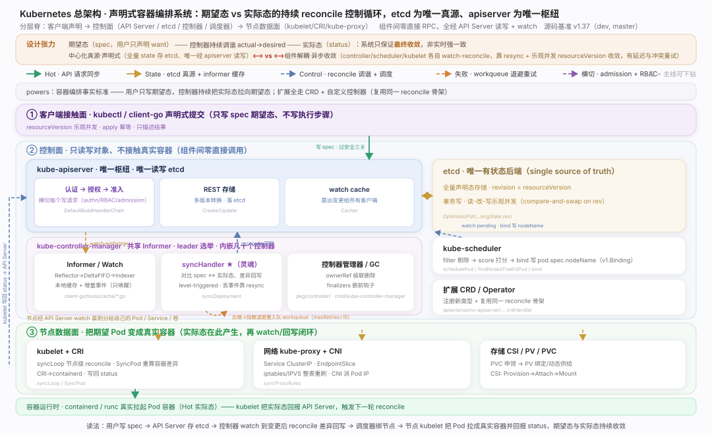
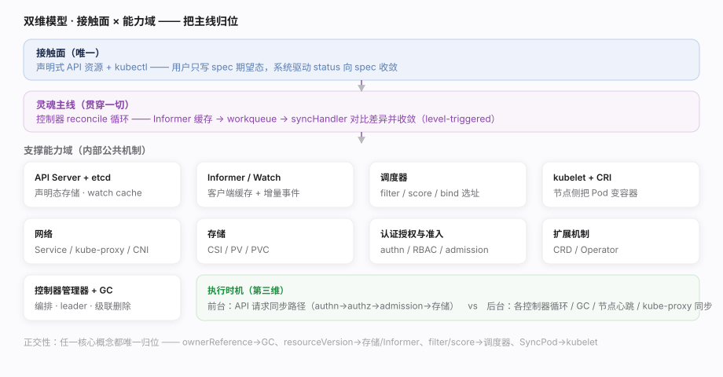
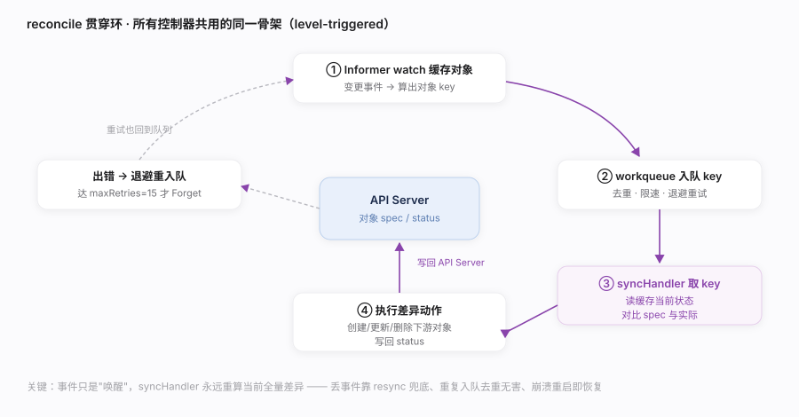
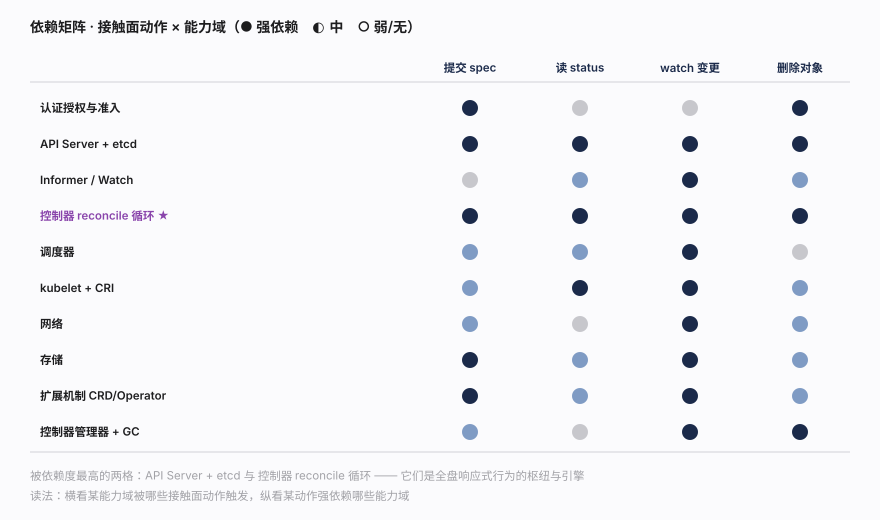
v1.32.0，本地 blobless 全量克隆 git clone --filter=blob:none --branch v1.32.0 后按 grep -n 逐处核实行号）：pkg/controller/deployment/deployment_controller.go、staging/src/k8s.io/client-go/tools/cache/shared_informer.go、staging/src/k8s.io/apiserver/pkg/server/config.go、pkg/scheduler/schedule_one.go、pkg/kubelet/kubelet.go。--max-requests-inflight（默认 400）/--max-mutating-requests-inflight（默认 200）与 APF（优先级与公平）决定过载行为。pod.spec.nodeName（绑定），真正拉起容器的是目标节点的 kubelet。| 维度 | K8s 落点 | 代表主线 |
|---|---|---|
| 接触面 | 声明式 API 资源 + kubectl（spec/status） | 接口_声明式API与期望态 |
| 能力域·存储 | API Server + etcd（声明态 + watch） | 支撑_APIServer与etcd |
| 能力域·响应 | 控制器 reconcile 循环（灵魂） | 支撑_控制器reconcile循环 |
| 能力域·调度 | filter/score/bind 选节点 | 支撑_调度器 |
| 能力域·执行 | kubelet + CRI 把 Pod 变容器 | 支撑_kubelet与CRI |
| 执行时机·前台 | API 请求同步路径（authn→authz→admission→存储） | 支撑_认证授权与准入 |
| 执行时机·后台 | 各控制器循环 / GC / 节点心跳 / kube-proxy 同步 | 支撑_控制器管理器与GC |
| 对照系（K8s 第一列） | K8s | 相似家族 | 关键差异 |
|---|---|---|---|
| 状态存储 | etcd 存全量声明态 | 家族 6 etcd 本身 | K8s 把 etcd 当唯一后端、外套 API Server + watch cache |
| 期望→实际收敛 | reconcile 控制循环 | 家族 4 HDFS 块汇报对账 | K8s 泛化成"任意资源的通用控制器框架" |
| 声明式接触面 | spec/status 对象 | 家族 0 SQL 的 DDL | K8s 无命令式接口，一切声明 |
| 节点执行代理 | kubelet + CRI | 家族 4 DataNode | kubelet 也是一个 reconcile 循环（syncLoop） |
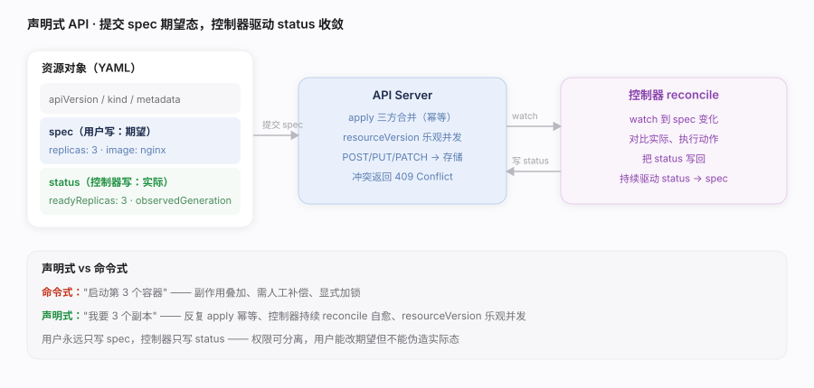
spec（期望态），系统负责把 status（实际态）驱动到 spec。这是"命令式 → 声明式"的范式转变：描述"要什么"，而非"做什么"。核实基准：staging/src/k8s.io/apiserver/pkg/registry/generic/registry/store.go（REST 存储）、staging/src/k8s.io/apiserver/pkg/server/config.go（请求链）。kubectl apply 而非 create/replace：apply 走三方合并、幂等、可 GitOps 化。--server-side apply（SSA）由 API Server 做字段管理，避免 client 端合并歧义。resourceVersion 重试，而非重试原请求。Available）满足再继续，避免"发了 YAML 就以为生效"。| 维度 | 命令式（传统） | 声明式（K8s） |
|---|---|---|
| 用户表达 | "启动第 3 个容器" | "我要 3 个副本"（spec.replicas=3） |
| 重复执行 | 副作用叠加 | 幂等（apply 收敛到同一态） |
| 故障恢复 | 需人工补偿 | 控制器持续 reconcile 自愈 |
| 并发协调 | 显式加锁 | resourceVersion 乐观并发 |
| 谁写实际态 | 调用方 | 控制器写 status，用户只读 |
| 字段 | 作用 | 归属能力域 |
|---|---|---|
resourceVersion | 乐观并发 + watch 断点续传 | APIServer与etcd / Informer |
ownerReferences | 级联删除与 GC 的对象图边 | 控制器管理器与GC |
finalizers | 删除前置钩子（阻塞删除做清理） | 控制器管理器与GC |
labels / selector | 控制器/Service 选中哪些对象 | 控制器循环 / 网络 |
uid | 对象身份（同名重建也不同 uid） | 全局 |
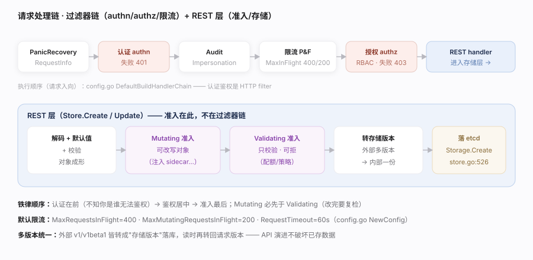
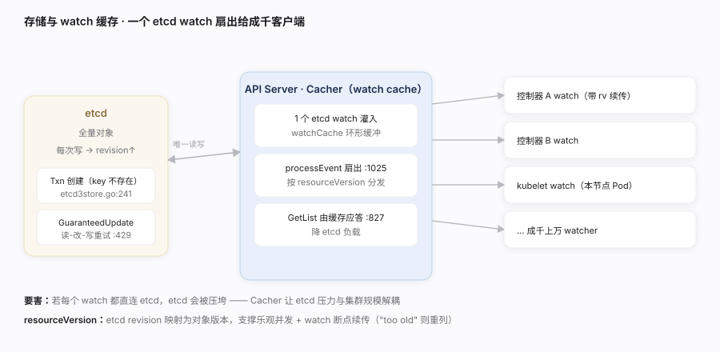
staging/src/k8s.io/apiserver/pkg/registry/generic/registry/store.go、storage/etcd3/store.go、storage/cacher/cacher.go、server/config.go。wal_fsync 时延。--watch-cache-sizes 调 watch cache 容量，避免客户端频繁 "too old resource version" 重列。| 操作 | 入口 | 落点 | 并发语义 |
|---|---|---|---|
| Create | Store.Create store.go:446 | Storage.Create:526 → etcd Txn（key 不存在） | 同名冲突 409 |
| Update | Store.Update :617 | GuaranteedUpdate :638 读-改-写重试 | resourceVersion 不匹配 → Conflict |
| Get | Store.Get :844 | etcd Range 或 watch cache | 可选一致性读 |
| Watch | Store.Watch :1415 | Cacher 内存缓存分发 | 按 rv 续传 |
| 无缓存直连 etcd | 有 Cacher 内存缓存 |
|---|---|
| N 个 watcher = N 个 etcd watch | 1 个 etcd watch 扇出给 N 个客户端 |
| etcd 成瓶颈，扩不动 | etcd 压力与客户端数解耦 |
| List 全打 etcd | List 可由缓存应答，降 etcd 负载 |
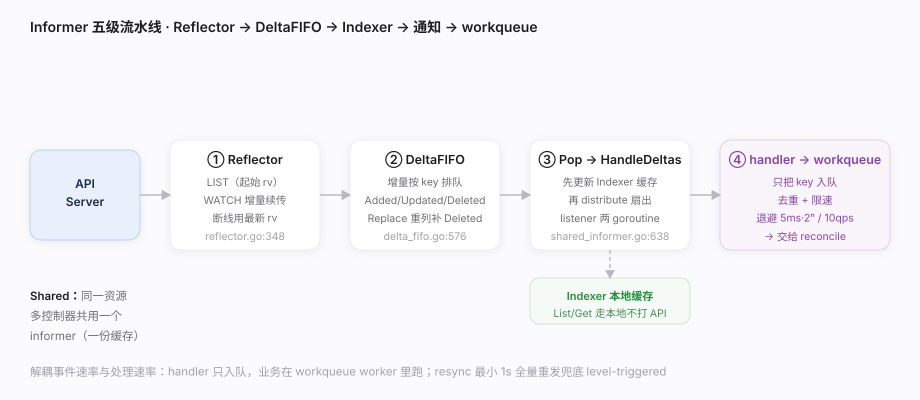
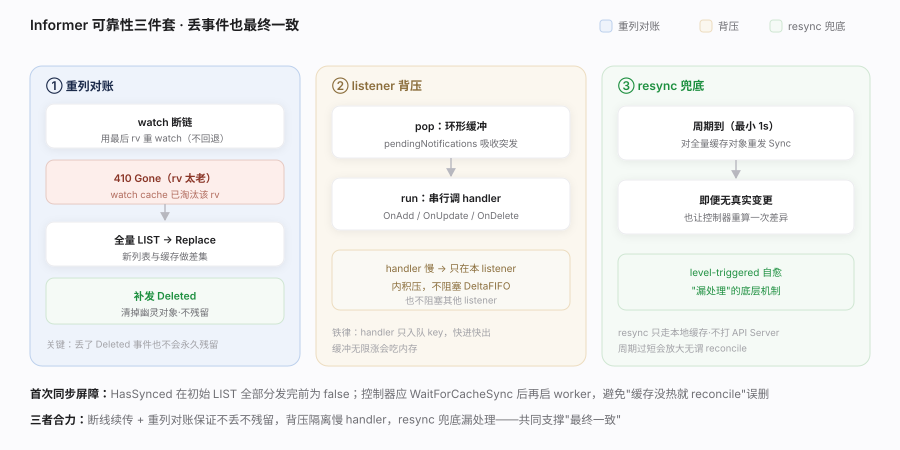
staging/src/k8s.io/client-go/tools/cache/（shared_informer.go、reflector.go、delta_fifo.go、controller.go）、util/workqueue/。| 组件 | 职责 | 关键点 |
|---|---|---|
| Reflector | List+Watch 拉取 | 起始 rv + 续传 + 重列对账 |
| DeltaFIFO | 增量按 key 排队 | Replace 补发消失对象的 Deleted |
| Indexer | 本地对象缓存 + 按 label/field 索引 | List/Get 走本地，不打 API Server |
| sharedProcessor | 事件扇出给多 listener | 每 listener 两 goroutine 串行不阻塞 |
| workqueue | 去重 + 限速 + 重试 | 见 reconcile 篇 |
| 机制 | 默认 | 来源 |
|---|---|---|
| 指数退避 | 基 5ms、上限 1000s（5ms·2^n） | default_rate_limiters.go:52 |
| 全局令牌桶 | 10 qps、突发 100 | default_rate_limiters.go:54（rate.NewLimiter(10,100)） |
| 去重 | 同 key 处理中不重复入队 | workqueue 语义 |
| resync | 最小 1s（minimumResyncPeriod） | shared_informer.go:579 |
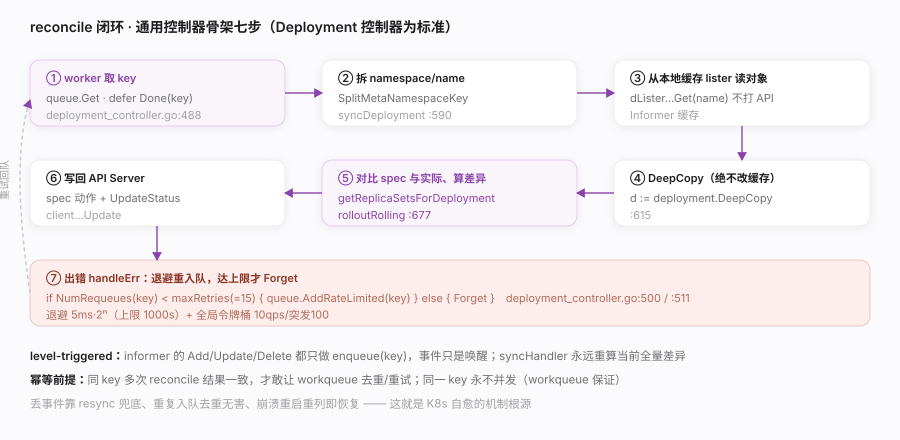
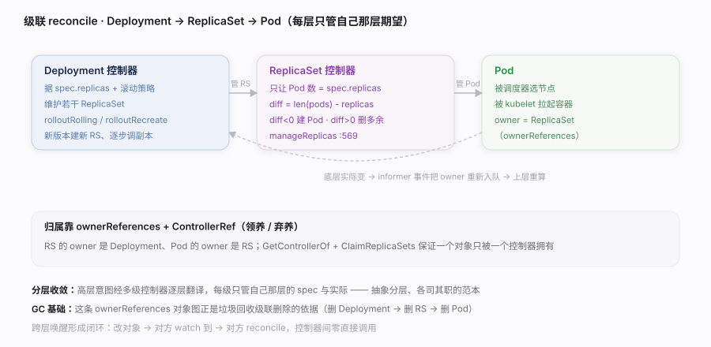
spec 与实际、执行差异动作、写回 API Server；出错退避重试。level-triggered（水平触发）：不处理"事件"，只消除"期望与实际的差距"。漏了这条，K8s 文档就是散的。核实基准：pkg/controller/deployment/deployment_controller.go、pkg/controller/replicaset/replica_set.go、util/workqueue/。--concurrent-*-syncs）权衡吞吐与 API Server 压力；同一 key 永不并发（workqueue 保证）。maxRetries=15，仍失败才 Forget 并告警。| 步 | 动作 | 代码锚点 |
|---|---|---|
| 1 | 从 workqueue 取 key | queue.Get :488 |
| 2 | 拆 namespace/name | SplitMetaNamespaceKey |
| 3 | 从本地缓存 lister 读对象 | dLister...Get(name) |
| 4 | DeepCopy（不改缓存） | :615 |
| 5 | 对比 spec 与实际、算差异动作 | getReplicaSetsForDeployment / manageReplicas |
| 6 | 写回 API Server（spec 动作 + status） | client...Update |
| 7 | 出错退避重入队，达上限 Forget | handleErr :500 / :511 |
| 维度 | edge-triggered（边沿） | level-triggered（K8s） |
|---|---|---|
| 处理对象 | "发生了什么事件" | "现在与期望差多少" |
| 丢事件 | 状态永久错 | resync 全量重算兜底 |
| 重复事件 | 需去重逻辑 | 重算幂等，无害 |
| 崩溃恢复 | 需重放事件 | 重启后重列 + reconcile 即恢复 |
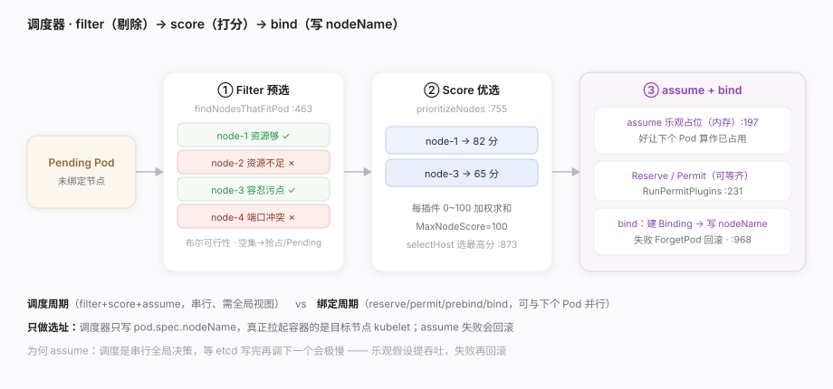
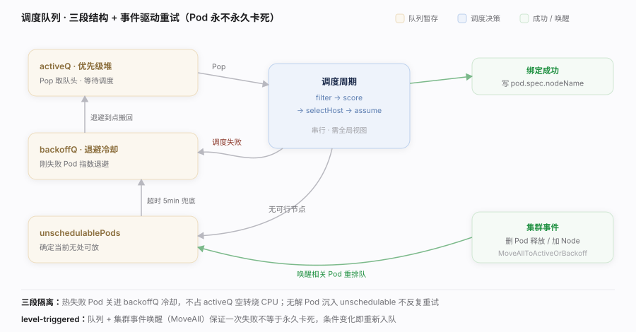
pod.spec.nodeName（绑定）。它本身不启动容器，只做"选址"。调度分两段：调度周期（filter→score→选点，串行、需全局视图）与绑定周期（reserve/permit/prebind/bind，可异步）。核实基准：pkg/scheduler/schedule_one.go、pkg/scheduler/framework/interface.go。percentageOfNodesToScore：只对部分节点打分，牺牲少量最优换调度吞吐。| 扩展点 | 作用 | 空集/拒绝后果 |
|---|---|---|
| PreFilter / Filter | 预处理 + 剔除放不下的节点 | 可行集空 → 抢占或 Pending |
| PostFilter | 无可行节点时触发（抢占） | 驱逐低优 Pod 腾位 |
| PreScore / Score | 对可行节点打分（0~100） | 决定优选排序 |
| Reserve / Permit | 预留资源 / 准入（可等齐） | Unreserve 回滚 |
| PreBind / Bind / PostBind | 绑定前后钩子 + 写 nodeName | 失败 ForgetPod 回滚 |
| 误解 | 实情 |
|---|---|
| 启动容器 | 只写 nodeName，容器由目标节点 kubelet 拉起 |
| 全局最优解 | 逐 Pod 贪心 + 打分，非全局最优 |
| 同步落库再调下一个 | assume 乐观占位，绑定异步，失败回滚 |
| 只看资源 | 亲和/反亲和、污点容忍、拓扑分布、PVC 拓扑都参与 filter/score |
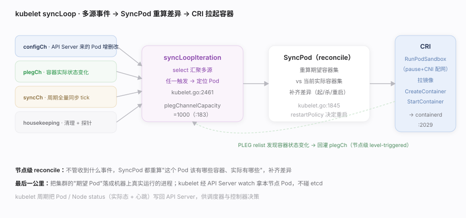
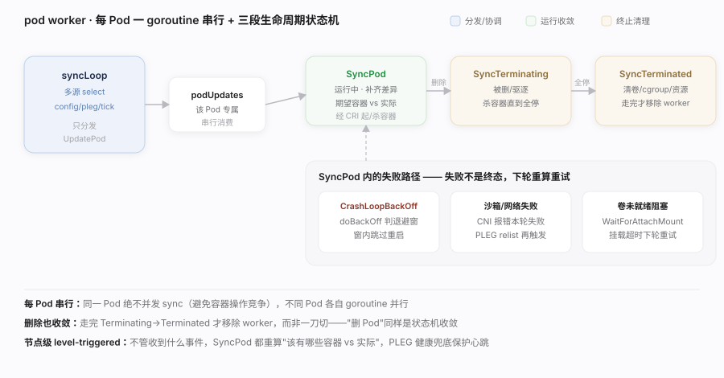
pkg/kubelet/kubelet.go。plegChannelCapacity（1000）影响状态感知延迟；节点容器过多会拖慢 relist。imagePullPolicy: IfNotPresent、镜像本地缓存。--kube-reserved/--system-reserved）避免 kubelet/系统被业务挤爆。| 接口 | 缩写 | 谁实现 | 干什么 |
|---|---|---|---|
| Container Runtime Interface | CRI | containerd / CRI-O | 沙箱/容器/镜像 gRPC |
| Container Network Interface | CNI | Calico / Cilium… | 给 Pod 沙箱配网络 |
| Container Storage Interface | CSI | 各存储驱动 | 挂载卷（见存储篇） |
| PodLifecycleEventGenerator | PLEG | kubelet 内部 | relist 容器状态生成事件 |
| 步骤 | 组件 | 动作 |
|---|---|---|
| 1 | 调度器 | 写 pod.spec.nodeName |
| 2 | kubelet syncLoop | configCh 收到本节点新 Pod |
| 3 | SyncPod | RunPodSandbox（pause + CNI 配网） |
| 4 | SyncPod | 拉镜像 + CreateContainer/StartContainer（CRI） |
| 5 | PLEG | relist 发现容器 Running，回灌事件 |
| 6 | kubelet | 探针检测 + 写 Pod status 回 API Server |
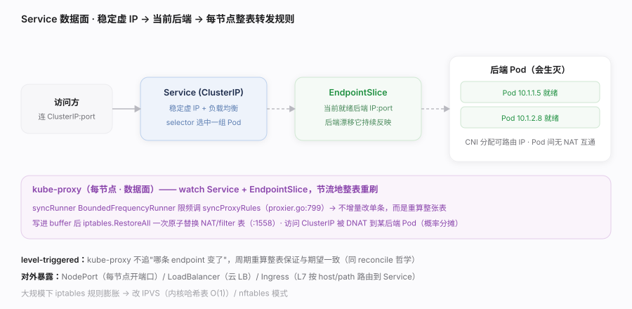
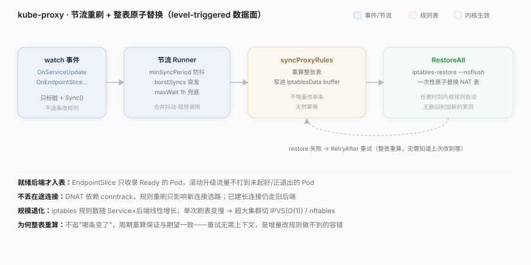
pkg/proxy/iptables/proxier.go。minSyncPeriod 控制 kube-proxy 重刷频率：太小 CPU 高、太大收敛慢。| 对象/组件 | 职责 | 类比 |
|---|---|---|
| Service (ClusterIP) | 稳定虚 IP + 负载均衡入口 | 内部 VIP |
| EndpointSlice | 当前就绪后端 Pod IP 列表 | 后端池（会变） |
| kube-proxy | 把 Service→后端 落成本机转发规则 | 分布式 LB 数据面 |
| CNI 插件 | 给 Pod 分配可路由 IP + 接入网络 | 网卡 + 路由 |
| Ingress | L7（host/path）路由到 Service | 反向代理 |
| 模式 | 机制 | 特点 |
|---|---|---|
| iptables | DNAT 规则链，概率分摊 | 默认、成熟；规则数随 Service 线性增长 |
| IPVS | 内核 LVS 哈希表 | 大规模下查找 O(1)、更快 |
| nftables | 新一代内核过滤框架 | 替代 iptables 的演进方向 |
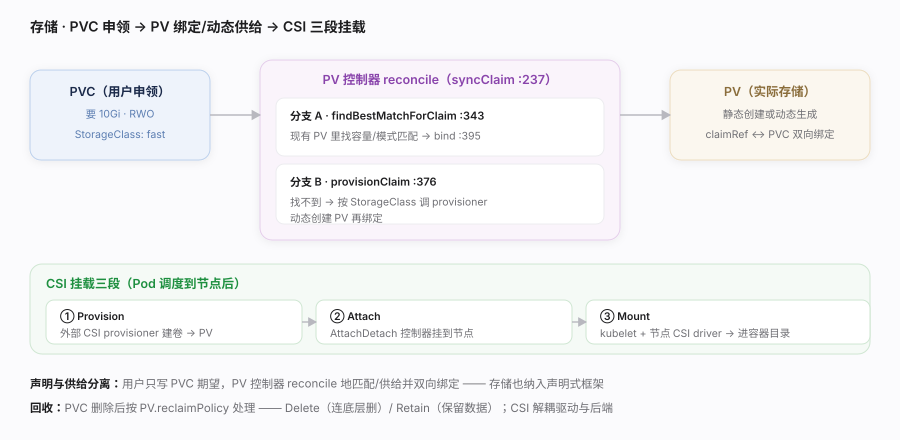
pkg/controller/volume/persistentvolume/pv_controller.go。volumeBindingMode: WaitForFirstConsumer 让卷绑定延迟到 Pod 调度后，避免卷与 Pod 落到不同拓扑域。| 对象 | 谁写 | 含义 |
|---|---|---|
| PVC | 用户 | 申领：要多大、什么访问模式、哪个 StorageClass |
| PV | 管理员 / provisioner | 实际存储资源（静态或动态生成） |
| StorageClass | 管理员 | 动态供给模板（provisioner + 参数） |
| VolumeAttachment | AttachDetach 控制器 | 卷是否已 attach 到某节点 |
| CSIDriver / CSINode | 驱动注册 | 节点上有哪些 CSI 能力 |
| 阶段 | 执行者 | 动作 |
|---|---|---|
| Provision | 外部 CSI provisioner | 在后端创建卷 → 生成 PV |
| Attach | AttachDetach 控制器 | 卷挂到目标节点（如云盘 attach VM） |
| Mount | kubelet + 节点 CSI driver | mount 进 Pod 容器目录 |
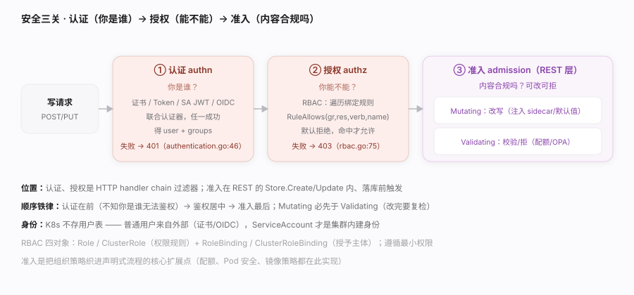
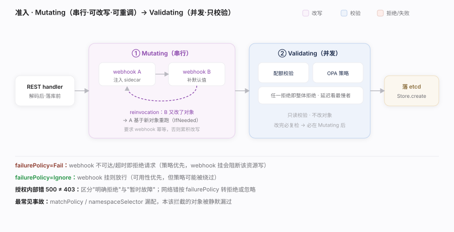
staging/src/k8s.io/apiserver/pkg/endpoints/filters/authentication.go、plugin/pkg/auth/authorizer/rbac/rbac.go、admission/plugin/webhook/mutating/dispatcher.go、server/config.go。*。failurePolicy 与超时要谨慎。kubectl auth can-i 验证有效权限；审计日志（Audit）回溯"谁在何时做了什么"。| 关卡 | 问题 | 主力机制 | 失败 | 位置 |
|---|---|---|---|---|
| 认证 authn | 你是谁 | 证书 / Token / SA JWT / OIDC | 401 | handler chain filter |
| 授权 authz | 你能不能 | RBAC（默认拒绝） | 403 | handler chain filter |
| 准入 admission | 内容合规吗 | Mutating + Validating webhook | 拒绝/改写 | REST 落库前 |
| 对象 | 作用域 | 含义 |
|---|---|---|
| Role | namespace | 一组权限规则（资源×动作） |
| ClusterRole | 集群 | 跨 namespace / 集群级资源的规则 |
| RoleBinding | namespace | 把 (Cluster)Role 授予主体 |
| ClusterRoleBinding | 集群 | 集群范围授予主体 |
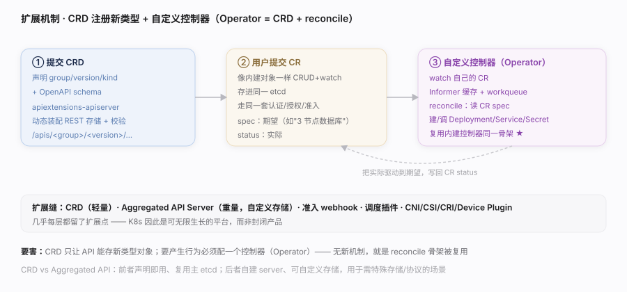
staging/src/k8s.io/apiextensions-apiserver/pkg/apiserver/apiserver.go、复用 reconcile 与 Informer 篇。structural schema + validating webhook 保证自定义对象数据质量。| 扩展点 | 扩展什么 | 典型用途 |
|---|---|---|
| CRD | 新增 API 资源类型 | 自定义对象（轻量） |
| Aggregated API | 挂载独立 apiserver | 自定义存储/复杂 API（重量） |
| 自定义控制器 / Operator | 新增 reconcile 逻辑 | 运维复杂有状态应用 |
| Admission Webhook | 写路径改写/校验 | 策略注入、sidecar 注入 |
| Scheduler 插件 | 调度决策 | 自定义 filter/score |
| CNI / CSI / CRI / Device Plugin | 可插拔驱动 | 网络/存储/运行时/硬件 |
| 维度 | CRD | Aggregated API Server |
|---|---|---|
| 复杂度 | 低（声明即用） | 高（自建 server） |
| 存储 | 复用主 etcd | 可自定义后端 |
| 校验 | OpenAPI schema + webhook | 任意自定义逻辑 |
| 适用 | 绝大多数扩展 | 需特殊存储/协议时 |
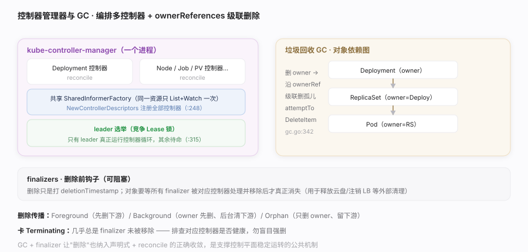
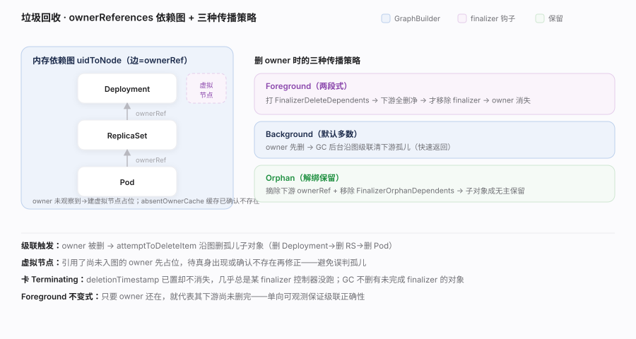
kube-controller-manager 把众多控制器编排进一个进程（共享 Informer、leader 选举保只有一个实例在跑），而垃圾回收（GC）控制器沿 ownerReferences 构成的对象图做级联删除、finalizers 提供删除前钩子——它们是让"控制器群"稳定运行、让"删除"正确收敛的公共机制。核实基准：cmd/kube-controller-manager/app/controllermanager.go、pkg/controller/garbagecollector/garbagecollector.go。--leader-elect 默认开，调 lease 时长权衡切换速度与抖动。--concurrent-*-syncs 调各控制器 worker 数，权衡收敛速度与 API Server 压力。| 策略 | 行为 | 用途 |
|---|---|---|
| Foreground | 先删所有下游，owner 最后删 | 需保证下游先清理 |
| Background（默认多数） | owner 先删，GC 后台清下游 | 快速返回 |
| Orphan | 只删 owner，保留下游 | 保留子对象（解绑管理） |
| 机制 | 数据 | 作用 |
|---|---|---|
| ownerReferences | 子对象 → owner 的边 | GC 级联删除的图 |
| GC 控制器 | 内存依赖图 + attemptToDelete | 删 owner 连带删孤儿 |
| finalizers | metadata 字符串列表 | 删除前置钩子（阻塞至清理完） |
| deletionTimestamp | 删除标记 | "正在删除"而非立即消失 |
| leader 选举 | Lease 锁 | 保证控制器单实例运行 |